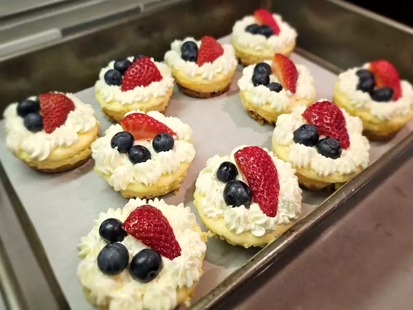

Red, White, and Blue Cheesecake Bites
Home

The Summer Treat You Didn't Know You Needed!
This has been a favorite among all my friends and family and it will be yours too, here is why!
These delicious fun-sized treats provide a mouth watering extravagant experience for your taste buds
with its perfect creamy texture.
Make sure to bring a napkin cause this desert can get messy!
Ingredients
Crumb Crust
- 1/2 cup finely crushed graham cracker crumbs
- 1 tablespoon white sugar
- 2 tablespoons melted butter
- 1/8 teaspoon vanilla extract
Cheesecake
- 1 pound cream cheese, at room temperature
- 1 lime, zested
- 1/2 cup white sugar
- 1/2 teaspoon vanilla extract
- 1 tablespoon all-purpose flour
- 2 large eggs
Whipped Topping and Fruit
- 1/2 cup cold heavy cream
- 1 tablespoon sour cream
- 24 slices fresh strawberry
- 72 fresh blueberries
Steps
- Preheat the oven to 325 degrees F (165 degrees C). Spray 2 12-cup mini muffin tins with nonstick cooking spray, and use your finger to make sure the inside of each cup is well greased. Place muffin tins on a sheet pan.
- Stir together graham cracker crumbs, 1 tablespoon sugar, butter, and 1/8 teaspoon vanilla extract in a bowl until crumb mixture resembles wet sand. Spoon a slightly rounded teaspoon of crumb mixture into the bottom of each cup. Use a spoon to spread crumbs into a relatively even layer.
- Set one muffin pan on top of the other and press lightly to compact the crumbs. Repeat with the other pan.
- Combine softened cream cheese, lime zest, and 1/2 cup sugar in a bowl, and beat until light and fluffy with an electric mixer or whisk. Add 1/2 teaspoon vanilla, flour, and 1 egg; beat until egg is incorporated and mixture is smooth. Add remaining egg; whisk until smooth.
- Transfer batter into a piping bag, and pipe into the muffin tins, filling them all the way to the top. You can use a spoon; but a piping bag is neater and takes much less time. Use a skewer to stir each cup to remove any air bubbles. Tap pan on the counter to settle batter down.
- Bake in the preheated oven until batter rises slightly and very small cracks appear on the surface, 20 to 25 minutes. The cheesecakes on the inside may cook more slowly than the ones on the outside, and may not rise as high or crack.
- Let cool to room temperature, about 20 minutes. Remove from the tins. Wrap and refrigerate cheesecakes until fully chilled, at least 30 minutes.
- To make whipped cream topping, whisk cold cream in a bowl until soft peaks start to form. Add sour cream, and continue whisking until medium-stiff peaks form. Top each cold cheesecake with whipped cream, 3 blueberries, and 1 strawberry slice.